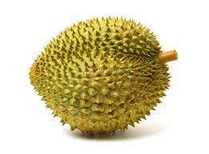

대충 웹페이지임
내가 좋아하는 과일

과일의 하나이다. 과육은 기본적으로 노란색에서 연두색이며, 맛은 품종마다 다르다. 일반적으로 한국에서 말하는 사과 맛은 달콤새콤 + 아삭아삭하게 씹히는 탄력이 있고 단단한 과육의 식감을 말한다. 종마다 다르지만 잘 익은 사과는 껍질이 벗겨지지 않은 상태에서도 청량감이 있는 좋은 냄새가 난다. 너무 오래 두면 수분과 펙틱화합물(pectic compounds)이 감소하면서 과실의 경도가 낮아져 모래처럼 푸석푸석 해진다.
내가 싫어하는 과일

아욱목 아욱과의 상록교목. 동남아시아가 원산지이며 식용가능한 열매가 열린다. 두리안이라고 하면 보통 이 열매를 지칭한다. 약 30종이 있는데, 이 중에 10종이 식용 가능하다. 맛이 대단히 독특하고 풍미가 깊어서 과일의 황제라는 호칭을 달고 있지만, 이 과일이 유명해진 가장 큰 이유는 특유의 냄새에 있다. 그래서 통칭 '악마의 과일'이다. 이건 태국 등지에서 붙인 별칭으로, 맛있어서 계속 먹게 된다는 의미이다.